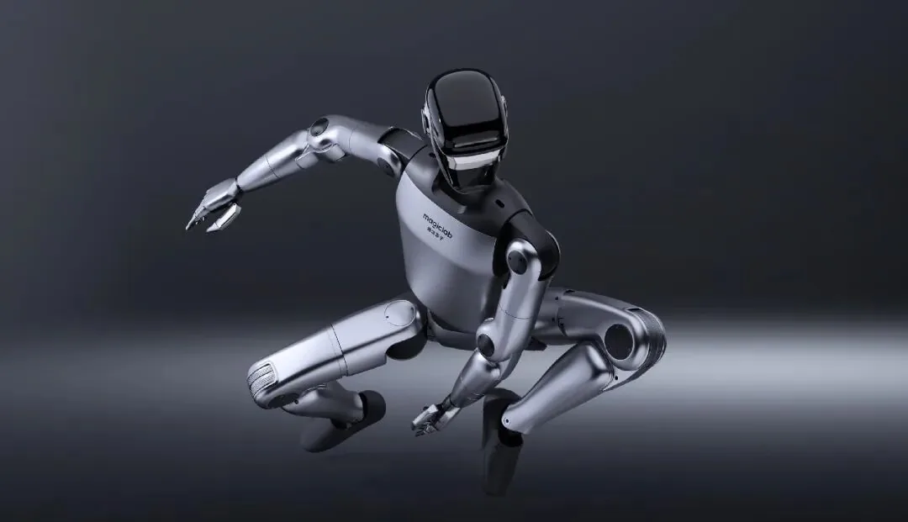

Who Is Dreame? Inside China's $4B Robot Empire
The parent company — from vacuums to a $4B ecosystem.
Dreame is the world's top-selling robot vacuum maker. Magic Atom — its humanoid spin-off — raised ¥500M led by auto-parts giant Tuopu, put robots on the 2026 Spring Festival Gala, and already runs them on Dreame's own factory lines. This is how a consumer robotics empire launches a humanoid war.

There are two ways into humanoids: start from a research lab, or start from a company that already makes robots by the million. Dreame (追觅科技), the world's best-selling robot vacuum brand in 2026, chose the second path — and spun out Magic Atom in January 2024 to walk it. The result is a humanoid company with something almost no rival has: a parent that manufactures tens of millions of robots a year, owns its motor and supply chain, and can serve as both investor and first customer.
Most humanoid startups are betting on a technology curve. Magic Atom is betting on a manufacturing curve. Dreame holds global leadership in robot vacuums (unit and revenue share, Q1 2026), which means mass-production discipline, in-house high-speed motors, supply-chain bargaining power and a factory where robots can train — literally. Since December 2024, MagicBot units have been running material-handling and dispensing jobs on Dreame's production lines, the same playbook Tesla uses with Optimus in its own plants. That factory-first strategy, plus a ¥500M Series A led by Tuopu Group (拓普集团, one of China's largest auto-parts makers), gives Magic Atom a capital-and-deployment moat few peers match.
| Model | MagicBot Gen1 / X1 | MagicBot Z1 | MagicDog | MagicHand H01 |
|---|---|---|---|---|
| Type | Full-size humanoid | High-dynamic humanoid | Quadruped | Dexterous hand |
| Key specs | 174-180cm · 67.5-70kg · 31-42 DoF · 20kg arm payload · 100 TOPS | 24-49 DoF · >130 N·m torque · 320° range · 4 m/s | -20°C to 55°C · cm-level positioning | Launched at GEIS 2026 |
| Status | Factory-deployed since Dec 2024 | Small-batch production; dev kit ~¥178,000 | Small-batch production | New (2026) |
| Signal | 2026 CCTV Gala first robot body partner | Famous for flips and deep-bend moves | Runs in extreme temps | Grasping for consumer AI |
Unveiled at GEIS 2026 in Silicon Valley, the MagicBot X1 stands 180cm, weighs about 70kg and carries 31 active degrees of freedom with a joint torque ceiling of 450 N·m. Magic Atom claims a 30%+ boost in movement speed and 50%+ wider limb range versus the previous generation, offered as a commercial standard version and an R&D open version. It ships with the company's self-developed joint modules and the "Atom Universal" embodied large model.
Z1 is the small, high-dynamic humanoid that made Magic Atom famous: 24 base degrees of freedom expandable to 49, joint torque above 130 N·m, a maximum joint range of 320° (enabling deep-bend moves), and a top speed of 4 m/s. It can recover from large disturbance impacts, rise continuously from falls, and even flip. A development version sells for about ¥178,000, targeting research, education and consumer markets — and it was the star of the 2026 CCTV Spring Festival Gala, where Magic Atom became the first humanoid body partner of the broadcast.
Dreame's restructuring in mid-2026 — cutting its sprawling business units from 200 to four and trimming headcount by about 12% — explicitly preserved Magic Atom as a core pillar. The group signed a procurement agreement to deploy Magic Atom humanoids and quadrupeds across Dreame factories and retail settings, giving the startup both a training ground and a revenue stream that pure-R&D rivals lack. Combined with Tuopu's manufacturing systems from the auto world, Magic Atom's supply chain reads like a cheat sheet: motors and precision parts from Dreame's ecosystem, mass-production methods from Tuopu.
Magic Atom is the cleanest test of the "consumer-robot-giant → humanoid-maker" thesis. If a company that already ships millions of vacuums can carry humanoids through its own factory floors, it shortens the loop from prototype to production dramatically. Watch whether the X1 finds paying industrial customers in 2026, and whether Dreame's core business keeps funding the bet.
Magic Atom (魔法原子, MagicLab) is the humanoid/embodied-AI arm spun out of Dreame Technology in January 2024. It raised ¥500 million in a Series A led by Tuopu Group in March 2026.
Magic Atom's lineup spans the full-size MagicBot Gen1/X1 (174-180cm, 31-42 DoF), the high-dynamic small humanoid MagicBot Z1 (24-49 DoF, 4 m/s), the MagicDog quadruped and the MagicHand H01 dexterous hand.
Z1 has 24 base degrees of freedom expandable to 49, joint torque above 130 N·m, a maximum joint range of 320° (deep-bend capable), top speed of 4 m/s, and a development version priced near ¥178,000.
Yes — MagicBot units have performed material handling and dispensing on Dreame's own factory lines since December 2024, and the company's robots were the first humanoid body partner of the 2026 CCTV Spring Festival Gala.
The parent company — from vacuums to a $4B ecosystem.
Key facts, products and supply-chain notes.
The manipulation race MagicHand H01 is entering.
Where Dreame's motor and actuator edge fits in.
Company profiles, product pages and supplier analysis for China's robotics ecosystem.